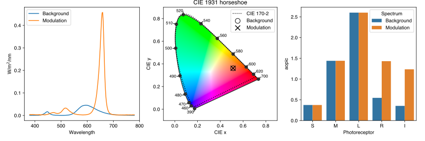

Making stimuli¶
Silent substitution stimuli typically take the form of pulses or temporal modulations of photoreceptor-specific contrast presented against a background spectrum to which an observer has adapted. The background spectrum serves to maintain a set pattern of photoreceptor activations and the modulation spectrum increases activation of the targeted photoreceptor(s) without altering activation of the others.
The example above describes, for a 5-primary stimulation device, a pair of silent substitution spectra where melanopsin receives 250% modulation and the cones are silent. From left to right are shown the spectral power distributions, chromaticity coordinates, and photoreceptor-specific irradiances for the background and modulation spectra. Rods appear to be modulated, too, but in this example both spectra are ~1800 lux, so we expect rods to be saturated and reason that it is safe to ignore them. We can see also that both spectra have the same chromaticity.
Arriving at a solution such as this requires groundwork. First, we need a forward model of our stimulation device that will predict the spectral output for any combination of settings. With that in place, we review the research goals: What photoreceptor(s) are we trying to isolate? How much contrast do we want to achieve? Do we wish to enforce any particular constraints on our stimuli? When we know the answer to these questions, we can formalise the problem and look for a solution. Two ways of doing this, each of which has unique advantages, are with numerical optimization and linear algebra.
Numerical optimization¶
Silent substitution can be approached as a constrained numerical optimization problem of the form:
\begin{equation} \begin{array}{rrclcl} & \underset{x \in \mathbb{R}^{n}}{\text{minimize}} & f(x) \\ & \text{subject to} & g^{L} \le g(x) \le g^{U} \\ & & x^{L} \le x \le x^{U} , \end{array} \end{equation}
where \(x \in \mathbb{R}^{n}\) are the optimization variables (the device settings) whose lower and upper bounds, \(x^{L}\) and \(x^{U}\), are between 0 and 1 to ensure that the solution is within the gamut of the device, \(f(x)\) is the objective function that aims to maximise contrast of the target photoreceptor(s), and \(g(x)\) is a function that calculates contrast for the silenced photoreceptor(s), where \(g^{L}\) and \(g^{U}\) should be zero. In all cases, \(x\) is a vector containing the weights for the LED settings.
Conveniently, PySilSub encapsulates this optimisation problem in a SilentSubstitutionProblem class that inherits everything from StimulationDevice. We can instantiate it in the same way, but this time including further information to condition the problem. As a basic demonstration, suppose we have calibration data for a linear, 8-bit, 5-primary stimulation system and that we want to find the settings for two spectra that will yield 250% contrast for melanopsin.
[1]:
import pandas as pd
from pysilsub.problem import SilentSubstitutionProblem
# Load the calibration data
spds = pd.read_csv(
'../../data/BCGAR_5_Primary_8_bit_linear.csv',
index_col=['Primary','Setting'])
spds.columns = pd.Int64Index(spds.columns.astype(int))
spds.columns.name = 'Wavelength'
# List of colors for the primaries
colors = ['blue', 'cyan', 'green', 'orange', 'red']
spds
[1]:
| Wavelength | 380 | 381 | 382 | 383 | 384 | 385 | 386 | 387 | 388 | 389 | ... | 771 | 772 | 773 | 774 | 775 | 776 | 777 | 778 | 779 | 780 | |
|---|---|---|---|---|---|---|---|---|---|---|---|---|---|---|---|---|---|---|---|---|---|---|
| Primary | Setting | |||||||||||||||||||||
| 0 | 0 | 0.000000 | 0.000000 | 0.000000 | 0.000000 | 0.000000 | 0.000000 | 0.000000 | 0.000000 | 0.000000 | 0.000000 | ... | 0.000000 | 0.000000 | 0.000000 | 0.000000 | 0.000000 | 0.000000 | 0.000000 | 0.000000 | 0.000000 | 0.000000 |
| 7 | 0.000068 | 0.000071 | 0.000062 | 0.000068 | 0.000055 | 0.000055 | 0.000064 | 0.000051 | 0.000063 | 0.000074 | ... | 0.000037 | 0.000039 | 0.000040 | 0.000039 | 0.000039 | 0.000039 | 0.000036 | 0.000032 | 0.000038 | 0.000037 | |
| 15 | 0.000137 | 0.000141 | 0.000123 | 0.000136 | 0.000109 | 0.000111 | 0.000127 | 0.000101 | 0.000126 | 0.000148 | ... | 0.000074 | 0.000077 | 0.000080 | 0.000079 | 0.000078 | 0.000078 | 0.000072 | 0.000064 | 0.000075 | 0.000075 | |
| 23 | 0.000205 | 0.000212 | 0.000185 | 0.000204 | 0.000164 | 0.000166 | 0.000191 | 0.000152 | 0.000189 | 0.000222 | ... | 0.000111 | 0.000116 | 0.000120 | 0.000118 | 0.000117 | 0.000117 | 0.000108 | 0.000096 | 0.000113 | 0.000112 | |
| 31 | 0.000274 | 0.000282 | 0.000247 | 0.000272 | 0.000219 | 0.000222 | 0.000254 | 0.000202 | 0.000252 | 0.000296 | ... | 0.000148 | 0.000154 | 0.000160 | 0.000158 | 0.000157 | 0.000156 | 0.000144 | 0.000128 | 0.000151 | 0.000149 | |
| ... | ... | ... | ... | ... | ... | ... | ... | ... | ... | ... | ... | ... | ... | ... | ... | ... | ... | ... | ... | ... | ... | ... |
| 4 | 223 | 0.003027 | 0.003555 | 0.003159 | 0.003563 | 0.002712 | 0.002951 | 0.002827 | 0.002159 | 0.003197 | 0.003623 | ... | 0.001990 | 0.002227 | 0.002264 | 0.002182 | 0.002558 | 0.002361 | 0.002268 | 0.001905 | 0.002162 | 0.002360 |
| 231 | 0.003135 | 0.003682 | 0.003271 | 0.003690 | 0.002808 | 0.003056 | 0.002928 | 0.002237 | 0.003311 | 0.003753 | ... | 0.002061 | 0.002306 | 0.002345 | 0.002259 | 0.002649 | 0.002446 | 0.002349 | 0.001973 | 0.002239 | 0.002445 | |
| 239 | 0.003243 | 0.003809 | 0.003384 | 0.003817 | 0.002905 | 0.003162 | 0.003029 | 0.002314 | 0.003426 | 0.003882 | ... | 0.002132 | 0.002386 | 0.002426 | 0.002337 | 0.002741 | 0.002530 | 0.002430 | 0.002041 | 0.002316 | 0.002529 | |
| 247 | 0.003351 | 0.003936 | 0.003497 | 0.003944 | 0.003002 | 0.003267 | 0.003130 | 0.002391 | 0.003540 | 0.004011 | ... | 0.002203 | 0.002465 | 0.002507 | 0.002415 | 0.002832 | 0.002614 | 0.002511 | 0.002109 | 0.002394 | 0.002613 | |
| 255 | 0.003459 | 0.004063 | 0.003610 | 0.004071 | 0.003099 | 0.003373 | 0.003231 | 0.002468 | 0.003654 | 0.004141 | ... | 0.002274 | 0.002545 | 0.002587 | 0.002493 | 0.002923 | 0.002699 | 0.002592 | 0.002177 | 0.002471 | 0.002698 |
165 rows × 401 columns
We can pass these data to SilentSubstitutionProblem—just like we did with StimulationDevice—only this time we specify which photoreceptors to ignore, which of them to silence, and which to isolate.
[2]:
from pysilsub.problem import SilentSubstitutionProblem as SSP
ssp = SSP(
resolutions=[255]*5, # Five 8-bit primaries
colors=colors, # Colors of the LEDs
spds=spds, # The calibration data
spd_binwidth=1, # SPD wavelength binwidth
ignore=['R'], # Ignore rods
silence=['S', 'M', 'L'], # Silence S-, M-, and L-cones
isolate=['I'], # Isolate melanopsin
target_contrast=2.5, # Aim for 250% contrast
name='BCGAR (8-bit, linear)' # Description of device
)
Because StimulationDevice is the base class we can do all the cool things described here, like plotting the spds and the gamut of the device. But lets get straight on to the optimisation.
As a general note, numerical optimisation is a big old topic and there are many algorithms available, each with their own idiosynchrasies. At present, PySilSub does not know the best algorithm for your stimulation device and research goals, nor does it unite different algorithms under a common calling syntax. It simply encapsulates your problem in the form of ready made functions that you can pass to an optimiser. So, If you are new to optimisation in Python, it’s worth investing a bit of time to learn the basics. This article is a good place to start.
Though not the only option, Scipy’s optimize module is comprehensive and contains a range of methods for local and global optisation with linear or nonlinear constraints. In this case we will use the SLSQP solver with Scipy’s optimize.minimize function.
[3]:
from scipy.optimize import minimize
# Initial guess for optimisation variables
x0 = ssp.initial_guess_x0()
# The silencing constraint is an equality
# constraint defined in the standard scipy
# format.
constraints = {
'type': 'eq',
'fun': ssp.silencing_constraint,
'ftol': 1e-07
}
# Perform the optimisation
result = minimize(
fun=ssp.objective_function,
x0=x0,
method='SLSQP',
bounds=ssp.bounds,
constraints=constraints,
tol=1e-07
)
result
[3]:
fun: 3.4687435975785355e-09
jac: array([ -5.75445672e-03, -1.10053212e-02, -8.89814623e-03,
-1.40415965e-03, -2.18769410e-04, 1.89077494e-03,
3.18125650e-03, 2.24496426e-03, 4.59190153e-04,
5.46986117e-05])
message: 'Optimization terminated successfully'
nfev: 701
nit: 60
njev: 60
status: 0
success: True
x: array([ 3.64725695e-02, 0.00000000e+00, 6.77943940e-05,
1.66243135e-01, 2.54857811e-04, 0.00000000e+00,
2.51008818e-02, 1.43483297e-01, 1.86159038e-02,
1.00000000e+00])
Printed above is the result of the optimisation in Scipy’s standard OptimizationResult format. The low value of fun indicates that we are very close to the target contrast of 250%. Unsurprisingly, what we actually need is result.x. Visualising the result is straight forward.
[4]:
result_fig = ssp.plot_ss_result(result.x)
result_fig.savefig('../../img/ss_example.svg')
Background luminance: 1794.8826686914454
Modulation luminance: 1794.8835907203427
Background xy: [ 0.52748464 0.3747774 ]
Modulation xy: [ 0.52741232 0.37482878]
Voila—a pair of silent substitution spectra. Converting the optimisation result to 8-bit settings for the stimulation device is easy.
[5]:
bg_settings = ssp.weights_to_settings(result.x[:5])
bg_settings
[5]:
[9, 0, 0, 42, 0]
[6]:
mod_settings = ssp.weights_to_settings(result.x[5:])
mod_settings
[6]:
[0, 6, 36, 4, 255]
All being well, if we pass these settings to the stimulation device it will produce these two spectra. But see here for various challanges and caveats.
Linear algebra¶
Silent substitution problems can also be solved with linear algebra. Continuing with our 5-primary example, suppose that we now want to isolate S-cones.
[7]:
ssp.isolate = ['S']
ssp.silence = ['M', 'L', 'I']
For a background spectrum we will take the mixture of all primaries at half-max power, \(\alpha_{bg} = [.5 \ .5 \ .5 \ .5 \ .5]\). Note that in this case we are not summing the predicted spectra as we’ll be doing matrix algebra involving the individual primaries.
[18]:
abg = [.5, .5, .5, .5, .5]
bg_spds = ssp.predict_multiprimary_spd(abg, nosum=True)
bg_spds
[18]:
| Primary | 0 | 1 | 2 | 3 | 4 |
|---|---|---|---|---|---|
| Wavelength | |||||
| 380 | 0.001098 | 0.000856 | 0.001115 | 0.001842 | 0.001736 |
| 381 | 0.001134 | 0.000933 | 0.001191 | 0.002067 | 0.002040 |
| 382 | 0.000991 | 0.000838 | 0.001198 | 0.001945 | 0.001812 |
| 383 | 0.001091 | 0.000828 | 0.001231 | 0.001945 | 0.002044 |
| 384 | 0.000879 | 0.000745 | 0.001003 | 0.001673 | 0.001556 |
| ... | ... | ... | ... | ... | ... |
| 776 | 0.000625 | 0.000533 | 0.000710 | 0.002349 | 0.001355 |
| 777 | 0.000577 | 0.000525 | 0.000693 | 0.002305 | 0.001301 |
| 778 | 0.000516 | 0.000398 | 0.000562 | 0.002146 | 0.001093 |
| 779 | 0.000605 | 0.000539 | 0.000733 | 0.002114 | 0.001240 |
| 780 | 0.000600 | 0.000559 | 0.000826 | 0.002350 | 0.001354 |
401 rows × 5 columns
Next, we’ll be needing the spectral sensitivities for the photoreceptors.
[19]:
from pysilsub.CIE import get_CIES026
sss = get_CIES026()
sss
[19]:
| Photoreceptor | S | M | L | R | I |
|---|---|---|---|---|---|
| Wavelength | |||||
| 380 | 0.0 | 0.000000 | 0.000000 | 5.890000e-04 | 9.181600e-04 |
| 381 | 0.0 | 0.000000 | 0.000000 | 6.650000e-04 | 1.045600e-03 |
| 382 | 0.0 | 0.000000 | 0.000000 | 7.520000e-04 | 1.178600e-03 |
| 383 | 0.0 | 0.000000 | 0.000000 | 8.540000e-04 | 1.322800e-03 |
| 384 | 0.0 | 0.000000 | 0.000000 | 9.720000e-04 | 1.483800e-03 |
| ... | ... | ... | ... | ... | ... |
| 776 | 0.0 | 0.000002 | 0.000024 | 1.730000e-07 | 2.550000e-08 |
| 777 | 0.0 | 0.000002 | 0.000023 | 1.640000e-07 | 2.420000e-08 |
| 778 | 0.0 | 0.000002 | 0.000021 | 1.550000e-07 | 2.290000e-08 |
| 779 | 0.0 | 0.000002 | 0.000020 | 1.470000e-07 | 2.170000e-08 |
| 780 | 0.0 | 0.000001 | 0.000019 | 1.390000e-07 | 2.050000e-08 |
401 rows × 5 columns
The dot product of these matrices, which we will call \(A\), contains the a-opic irradiances for the primary components of the background spectrum.
[37]:
A = sss.T.dot(bg_spds)
A
[37]:
| Primary | 0 | 1 | 2 | 3 | 4 |
|---|---|---|---|---|---|
| Photoreceptor | |||||
| S | 3.580009 | 2.453689 | 0.211358 | 0.095264 | 0.057067 |
| M | 0.627573 | 1.355843 | 3.573256 | 4.683028 | 0.156777 |
| L | 0.435727 | 0.873636 | 2.915142 | 8.686473 | 0.853310 |
| R | 1.730730 | 2.965132 | 3.638927 | 1.288265 | 0.076642 |
| I | 2.094721 | 3.520715 | 2.841600 | 0.509312 | 0.069365 |
Now, the unique scaling coefficients for the primaries \(\alpha_{sc} = [p_{0} \ p_{1} \ p_{2} \ p_{3} \ p_{4}]\) that must be added to the primary weights for the background \(\alpha_{bg}\) for a requested modulation \(\beta = [S \ M \ L \ R \ I]\) are discovered as \(\alpha_{sc} = \beta A^{-1}\).
[38]:
import numpy as np
# Calculate inverse of A
A1 = pd.DataFrame(
np.linalg.inv(A.values),
A.columns,
A.index)
A1
[38]:
| Photoreceptor | S | M | L | R | I |
|---|---|---|---|---|---|
| Primary | |||||
| 0 | 0.473797 | -0.159332 | -0.001803 | 0.993080 | -1.104764 |
| 1 | -0.279487 | 0.340021 | -0.037472 | -1.654925 | 1.750941 |
| 2 | -0.002424 | -0.286409 | 0.015329 | 1.342032 | -1.022070 |
| 3 | 0.026572 | 0.502356 | -0.059770 | -0.855885 | 0.523675 |
| 4 | -0.218010 | -4.402157 | 1.767262 | 5.315177 | -3.067724 |
[39]:
# Requested modulation for S-cones
# S, M, L, R, I
b = np.array([1., 0., 0., 0., 0.])
# Calculate the scaling coefficients
asc = A1.dot(b)
asc
[39]:
Primary
0 0.473797
1 -0.279487
2 -0.002424
3 0.026572
4 -0.218010
dtype: float64
Following on from above, \(\alpha_{mod} = \alpha_{bg} + \alpha_{sc}\).
[40]:
amod = (abg + asc).to_list()
amod
[40]:
[0.9737967205732633,
0.2205128840696679,
0.497575760149633,
0.5265724940899263,
0.28198992315052973]
Obviously, these values need to be between zero and one for the solution to be valid, which in this case they are. As before, we can visualise the solution.
[41]:
result_fig = ssp.plot_ss_result(abg + amod)
Background luminance: 8996.204095646926
Modulation luminance: 8996.271148062795
Background xy: [ 0.36478141 0.31094694]
Modulation xy: [ 0.3434773 0.27744979]
[ ]: